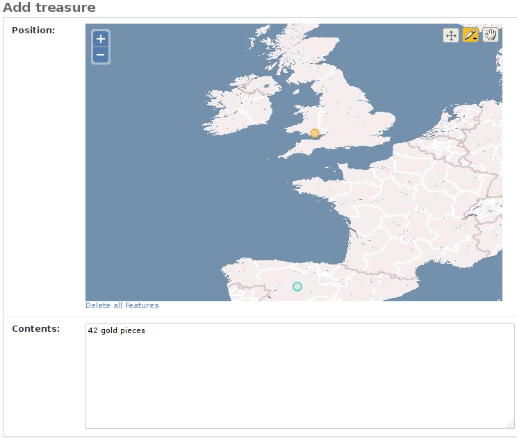

In the previous part of the tutorial, we learned how to create geo models. One of Django’s strengths is its built-in admin interface, and GeoDjango supports easy edition of your geometry fields right in this very admin.
Positions such as (10, 10) or (10, 12) are not really human-friendly:
we can’t easily tell where such a position will be located on a map. Also if
you deal with fields such as
PolygonField, you’ll definitely want a
nice interface to draw your polygon. The
GeoModelAdmin class makes this easier by
displaying a map as a widget for geometric fields. Edit the
tracking/admin.py file so it looks like this:
from django.contrib.gis import admin
from .models import Animal, Reserve
admin.site.register(Animal, admin.GeoModelAdmin)
admin.site.register(Reserve, admin.GeoModelAdmin)
Now go to the admin, add a reserve object and notice how GeoDjango allows you to draw a polygon, representing the boundaries of the reserve. Also try to edit an animal, and see how you can move the point on the map to change its position.
Once you’re finished with the admin site, head over to the part 3 of this tutorial, which will show you various tools you can use to display geographic data on your site.
Apr 03, 2016